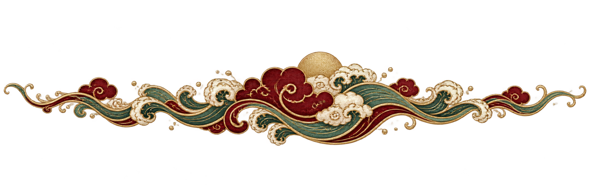

Present simple — I work · He works · We don't work · Do you work? — для привычек и постоянных фактов: I live in Moscow. She drinks tea every morning.
Present continuous — am / is / are + V-ing — для действия прямо сейчас или временного периода: I'm doing my homework. She's living with her aunt this month.
Маркеры: every day, usually, often, never → simple. now, at the moment, this week → continuous.
1 · Fedya usually football on Saturdays.
2 · Look! It again.
3 · My mum in a hospital.
4 · Please be quiet. The baby .
5 · We TV every evening.
6 · "Where's Tim?" "He in his room."
7 · Water at 100 degrees.
8 · This week I for the English test.
9 · George usually to Kirrin Island with Tim.
10 · "What right now?" "Nothing special."
Past simple — короткое завершённое действие в прошлом. Правильные work → worked, неправильные go → went, see → saw, buy → bought. Отрицание didn't, вопрос Did you …?
Past continuous — was / were + V-ing — для длинного действия в прошлом или фона: I was reading when the phone rang.
Классическая пара: длинное (PC) + короткое (PS) — While we were walking home, it started to rain.
1 · Yesterday Fedya to the swimming pool.
2 · We the film because we arrived late.
3 · that book at the airport?
4 · While I , the dog started barking.
5 · I George at the station this morning.
6 · They football when it began to rain.
7 · My dad very tired after the trip.
8 · When Mum came home, I my homework.
Have / has + V3 — действие в прошлом, связанное с настоящим или не закончилось во времени: I've just finished my homework. · She has lived in Moscow for 5 years.
Маркеры: just, already, yet, ever, never, for 5 years, since 2020, today / this week.
Разница с Past Simple: PS = конкретный момент (yesterday, in 2020), PP = связь с настоящим.
1 · I my dinner.
2 · to China?
3 · They to Beijing in 2022.
4 · She me yet today.
5 · Fedya in Moscow for ten years.
6 · We George last summer at Kirrin.
7 · I that book.
8 · "Where's Tim?" "He out with George."
I've just left = только что · I've already seen = уже видел · Have you finished yet? = уже? (в вопросах/отр.) · Have you ever tried sushi? = когда-нибудь.am / is / are going to + V — план, решение, принятое ЗАРАНЕЕ: We're going to visit Beijing next summer.
will + V — спонтанное решение, предсказание, обещание: OK, I'll help you. · I think it will rain tomorrow.
Present continuous = ближайший план с временем/местом: I'm meeting Mum at 5 pm.
1. We ___ a new car next month. (мы уже решили)
2. "The bag looks heavy." "Don't worry, I ___ you."
3. Look at those black clouds — it ___.
4. I ___ my grandma at 4 pm tomorrow.
5. I think our team ___ the match. (предсказание)
6. ___ you ___ me a hand with this box? (просьба)
can / could — умение, возможность, вежливая просьба: I can swim. · Could I borrow your phone?
must / have to — обязанность. must = моё убеждение (I must finish this today). have to = внешнее правило (You have to show your passport). don't have to = не обязан, mustn't = нельзя.
should — совет: You should go to bed earlier.
might / may — возможно: It might rain this evening.
1. ___ you speak French? — No, but I speak Spanish.
2. At the airport you ___ show your passport.
3. It's late — you ___ go to bed now.
4. I'm not sure — I ___ come to the party or stay home.
5. You ___ smoke in the hotel room — it's forbidden.
6. You ___ pay for breakfast — it's included in the price.
7. ___ I use your pen for a second?
8. Fedya is tired. He ___ have a short break.
have got = have: I've got / I have a brother.
Would like = вежливое "хотел бы": I'd like a cup of tea. · Would you like some water?
There is / there are — "есть": There is a book on the table. · There are five children in the garden. В прошлом there was / there were.
1 · a new café near our school.
2 · three bedrooms in the cottage.
3 · George a big black dog called Tim.
4 · some tea?
5 · I a chicken sandwich, please.
6 · Yesterday a party at Anne's house.
7 · a brother or a sister?
8 · any apples in the kitchen.
| Subject | I / you / he / she / it / we / they |
| Object | me / you / him / her / it / us / them |
| Possessive adj | my / your / his / her / its / our / their |
| Possessive pron. | mine / yours / his / hers / — / ours / theirs |
| Reflexive | myself / yourself / himself / herself / itself / ourselves / themselves |
This is my book. · The book is mine. · I did it myself.
1 · This is my sister. ___ name is Anya. →
2 · Can you help ___ with this exercise? →
3 · Tim is George's dog. He belongs to ___ (she/her). →
4 · That bike is not yours — it's ___ (my/mine). →
5 · The children can look after ___ (them/themselves). →
6 · I like Julian. ___ is a kind boy. →
7 · We invited ___ (they/them) to our party. →
8 · This cottage is ___ — my aunt's (our/ours). →
9 · The cat is cleaning ___. →
10 · "Is this ___ coat?" — "Yes, it's mine." →
a / an = один из многих, первое упоминание. an перед гласным ЗВУКОМ: an apple, an hour (/ˈaʊər/), a university (звук "ю"), an MP (звук "эм").
the = уже упомянутый, конкретный, единственный: I bought a book. The book is amazing. · The Moon · the sun · the Thames.
× (zero) — общие понятия, множ. число без конкретики: I love pizza. · Dogs are friendly.
1. I'd like ___ apple, please.
2. ___ Moon looks very bright tonight.
3. Fedya goes to ___ school every day.
4. ___ Thames flows through ___ London.
5. She works as ___ engineer in a big company.
6. We speak ___ English and a little ___ Spanish.
7. I bought ___ new phone yesterday. ___ phone is amazing.
8. He plays ___ guitar very well.
9. ___ Pacific Ocean is the largest ocean.
10. I love ___ pizza, but I don't eat ___ meat.
11. Could I have ___ hour to think about it?
12. Kirrin Cottage is ___ small house near ___ sea.
1 · We have breakfast together at 7 am.
2 · Fedya goes to school by bus.
3 · My mum is at work until 6 pm.
4 · After lunch I'll call you.
5 · He plays tennis every Sunday.
6 · She plays piano beautifully.
7 · I had big breakfast this morning.
8 · We arrived home at midnight.
9 · I'm learning English and Chinese.
10 · Fedya goes to bed at ten.
11 · dogs are friendly animals.
12 · "Where's Dad?" "He's at work."
the: the Volga, the Thames, the Pacific, the Red Sea.the: the Alps, the Urals.the: the UK, the USA, the Netherlands, the Czech Republic.the: the Ritz, the British Museum, the Times, the Titanic.1 · Volga is the longest river in Europe.
2 · We would love to climb Everest one day.
3 · She comes from UK, from Manchester.
4 · My uncle works at British Museum.
5 · Thames flows through London.
6 · The Queen once stayed at Ritz hotel.
7 · I read it in Times.
8 · Titanic sank in 1912.
9 · Mount Fuji is a famous mountain in Japan.
10 · My aunt lives on Oxford Street in London.
11 · We walked around Hyde Park yesterday.
12 · Alps are a huge mountain range in Europe.
the. Простые имена (France, Spain, Russia, China) — без артикля.Финальная диагностика по артиклям. 20 случайно перемешанных пунктов из §-правил G8a/b/c. Target: 18+/20.
1. I'd like ___ cup of ___ coffee, please.
2. ___ Pacific is the largest ocean.
3. She has ___ MA in art history.
4. Fedya is at ___ school now.
5. We went to ___ Hague last year.
6. ___ Fedya is my cousin.
7. He plays ___ chess every evening with ___ grandfather.
8. We saw ___ beautiful rainbow after ___ storm.
9. I love ___ pizza, but I don't eat ___ meat.
10. ___ sun rises in ___ east.
11. Mum went to ___ hospital to visit grandma.
12. ___ Czech Republic is in ___ Central Europe.
13. Could I have ___ hour to think?
14. She goes to ___ bed very late.
15. ___ Times is a famous British newspaper.
16. ___ children often ask ___ difficult questions.
17. He is ___ engineer at ___ big company.
18. We flew over ___ Alps on our way to ___ Italy.
19. It was ___ most interesting lesson of ___ week.
20. I live in ___ Moscow, on ___ Tverskaya Street.
15 пропусков в коротком рассказе про Марко — поставь a / an / the / × в каждый. Проверяет не правило по-отдельности, а поток артиклей внутри связного текста.
Marco is Italian engineer. He lives in Milan and works for big tech company.
Every Monday he gets up at seven, has breakfast and takes metro to work.
Last summer he visited China. He flew to Beijing and stayed in small hotel near Forbidden City.
hotel was quiet and clean. In morning he always had tea with dim sum.
On his last day he climbed Great Wall and bought expensive teapot as souvenir.
some — утверждение + вежливое предложение/просьба: I need some water. · Would you like some tea?
any — вопрос + отрицание: Have you got any brothers? · There aren't any apples.
somebody / something / somewhere в утверждении · anybody / anything / anywhere в вопросе · nobody / nothing / nowhere — отрицание само по себе.
1 · There is milk in the fridge.
2 · Have you got questions?
3 · I didn't buy bread today.
4 · Would you like to drink?
5 · There is at home — everyone's out.
6 · I can't find my keys .
7 · Did call me while I was out?
8 · strange happened yesterday.
many / few / a few — с исчисляемыми (books, cars, children). much / little / a little — с неисчисляемыми (water, time, money, luggage). a lot of — универсально.
a few = несколько (нормально) · few = мало (почти нет). a little = немного (есть) · little = мало (почти нет).
1. How ___ time do we have before the plane leaves?
2. I don't have ___ friends in this school.
3. There are ___ apples left — only two.
4. Can I have ___ water, please? I'm thirsty.
5. Fedya has ___ homework to do tonight.
6. I have very ___ money — I can't buy that bike.
7. I speak ___ French — just enough to order coffee.
8. How ___ children are in your class?
1 слог: old → older → the oldest · big → bigger → the biggest.
2+ слога: expensive → more expensive → the most expensive.
Исключения: good → better → the best · bad → worse → the worst · far → farther → the farthest · little → less → the least · much/many → more → the most.
as … as = такой же: Fedya is as tall as his brother.
1 · Fedya is than his cousin.
2 · This is book I've ever read.
3 · My phone is than yours.
4 · Yesterday was day of the week.
5 · Russia is than France.
6 · This exercise is than the previous one.
7 · Beijing is one of cities in the world.
8 · Travelling by plane is than by train.
9 · This café is as as the other one.
10 · Who is boy in your class?
Adjective описывает существительное: a quick runner. Adverb описывает глагол: He runs quickly.
adj + -ly = adverb: quick → quickly, slow → slowly, careful → carefully.
Исключения: good → well, fast → fast, hard → hard, late → late. (hardly ≠ hard; hardly = едва.)
1. She sings very ___.
2. Fedya is a ___ swimmer.
3. Please speak ___ — I can't hear you.
4. The dog ran across the garden ___.
5. It was a ___ journey — only two hours.
6. He opened the door ___ not to wake the baby.
Базовый порядок: Subject + Verb + Object + Place + Time — Fedya played football in the park yesterday.
Always / usually / often / never — ПЕРЕД смысловым глаголом, но ПОСЛЕ be: I usually walk to school. · She is always late.
Fedya plays football every Saturday.
She is always late for school.
Do you often go to Beijing?
My mum usually cooks dinner in the kitchen.
We arrived in Beijing yesterday afternoon.
George never eats spicy food.
and — добавление · but — противопоставление · or — выбор · so — результат (поэтому) · because — причина (потому что).
It was cold, so I put on a jacket. · I put on a jacket because it was cold.
1 · I was tired, I went to bed early.
2 · Would you like tea coffee?
3 · Fedya likes maths hates history.
4 · We stayed at home it was raining.
5 · She can speak Russian English.
6 · The film was long very interesting.
7 · He didn't eat breakfast he wasn't hungry.
8 · I'm going to the shop. Do you need anything, is everything OK?
If + Present simple, Present simple — всегда так: If you heat water to 100°, it boils.
If + Present simple, will + V — реальное будущее условие: If it rains tomorrow, we'll stay at home.
When вместо if — когда уверен, что случится: When I grow up, I'll be a scientist.
1 · If you hard, you'll pass the test.
2 · When Mum home, we'll have dinner.
3 · If I time tomorrow, I'll help you.
4 · We to the beach if the weather is nice.
5 · If you heat ice, it .
6 · She angry if you break her phone.
7 · If Fedya his homework, Mum won't let him play.
8 · When I this book, I'll give it to you.
who — люди · which — вещи/животные · that — универсально (informal).
Julian is the cousin who is the oldest. · Timothy is the dog which/that belongs to George.
1 · A doctor is a person helps sick people.
2 · This is the house Aunt Fanny lives in.
3 · George is the girl doesn't want to be called Georgina.
4 · The book I bought yesterday is very interesting.
5 · Tim is a dog only likes George.
6 · Can you remember the friend we met at the airport?
at — точка во времени: at 7 o'clock · at night · at the weekend (BrE) · at Christmas.
on — день / дата: on Monday · on 10 May · on Christmas Day.
in — долгий период: in April · in 2026 · in summer · in the morning.
Без предлога: every Monday, this week, next year, last summer, tomorrow, yesterday.
1 · The lesson starts 4 pm.
2 · My birthday is 15 August.
3 · We went to Beijing 2024.
4 · See you Friday.
5 · I usually read the evening.
6 · He woke up night because of the storm.
7 · We arrived the airport 10 pm.
8 · summer we often go to the lake.
9 · The shop is closed Sundays.
10 · I'll call you tomorrow.
1. The lesson always starts and ends ___.
2. We arrived ___ to catch the last bus.
3. ___ of the film, the hero wins.
4. ___ he decided to buy the red one, not the blue.
5. This bus is never ___ — always 5-10 minutes late.
6. Will you be here ___ for dinner at 7?
7. There was a loud noise ___ the concert — the drum solo.
8. They talked for hours, and ___ they understood each other.
9. ___ of August we're going to the sea.
10. Fedya is always ___ for school — never late.
in — внутри (in Moscow · in a car · in the room · in the box).
on — поверхность / улица (on the table · on Tverskaya Street · on the wall · on the second floor).
at — точка / место события (at the airport · at the bus stop · at the party · at the station).
Также: under / behind / in front of / between / next to / near / opposite.
1 · I live Moscow, Tverskaya Street.
2 · We arrived the airport at 10 pm.
3 · The cat is sleeping the table.
4 · Fedya's school is the park.
5 · I'll meet you the bus stop 3 pm.
6 · My book is the shelf, the window.
7 · Please take me this address.
8 · There are two children sitting my parents.
9 · We spent the summer China.
10 · The hotel is the station.
1 · George is ill — he's hospital for a week.
2 · Fedya is still bed — he's sleeping.
3 · Mum is work now. She'll be home at 6.
4 · We met a party last Saturday.
5 · I'll be home all evening — call me anytime.
6 · I lost my ticket the station.
7 · The children are school now, lessons started at 8.
8 · Last Saturday we had a lovely dinner home.
9 · Please come home before 9 pm.
10 · My uncle has been hospital since Monday.
I'm going to home. Только I'm going home. То же с upstairs, downstairs, abroad: I went × upstairs / × abroad.1 · We flew Beijing last summer.
2 · The plane arrives Beijing at 10 am.
3 · We arrived the hotel very late.
4 · The cat jumped the box.
5 · I'm going home now — see you tomorrow.
6 · She drove work this morning.
7 · Please come the kitchen, dinner is ready.
8 · We travelled from Moscow Rome.
9 · The train arrives the station at 9:15.
10 · Fedya came back home late last night.
11 · My cousin has gone abroad to study in Spain.
12 · When will the flight arrive London?
listen to · look at / look for / look afterwait for · belong to · think about / think ofallergic to · interested in · good / bad atafraid of · married to · sorry aboutПосле предлога — глагол в -ing: I'm interested in learning Chinese. · He's good at playing football.
1 · I'm allergic peanuts.
2 · Please listen me carefully.
3 · This bike belongs my brother.
4 · Fedya is interested dinosaurs.
5 · George is good swimming.
6 · Please wait me outside.
7 · My little sister is afraid dogs.
8 · What are you thinking ?
9 · I'm looking my keys — I can't find them.
10 · Mum is talking the teacher now.
afraid of, scared of, tired ofinterested in, involved in, good / bad atmarried to, similar to, different from (BrE) / different than (AmE)proud of, jealous of, fond ofready for, late for, responsible forfamous for, sorry about / sorry for (sb)worried about, excited about1 · Fedya is interested dinosaurs and space.
2 · I'm scared very spicy food.
3 · George is really good swimming.
4 · My aunt is married a doctor.
5 · Fedya is very proud his test score.
6 · We're ready the trip tomorrow.
7 · I'm sorry what happened yesterday.
8 · My cousin is similar me — same hobbies.
9 · China is famous its Great Wall and tea.
10 · He was late the class again.
11 · The teacher is worried his low grades.
12 · This book is quite different the first one.
13 · I'm so excited seeing Beijing!
14 · Mum is responsible the project at work.
15 · I'm getting tired doing the same exercise.
get up — вставатьgo out — выходить (гулять, в бар)come in — зайтиput on — надеть · take off — снять / взлететьturn on / turn off — включить / выключитьpick up — поднять / забрать (кого-то)look up — найти в словаре · look after — присматриватьcheck in / check out — заселиться / выселиться (отель)1. Please ___ your shoes before you go to bed.
2. At the hotel reception we ___ at 3 pm.
3. It's cold outside — ___ your jacket.
4. Can you ___ the light? It's too bright.
5. If you don't know the word, ___ it ___ in the dictionary.
6. My aunt will ___ our cat while we're on holiday.
20 ключевых китайских-тревел фраз. Нажми ▶ — услышишь произношение (TTS браузера, en-GB). Повтори вслух 2 раза, стараясь копировать интонацию. Разогревает речь перед аудированиями ниже.
This is Fedya. He is so excited. In two weeks his family is going to Beijing for ten days. They are going to stay in a hotel near the Forbidden City. Fedya will probably try all the street food — he loves dumplings! His dad says they might also visit the Great Wall. Fedya will start packing tomorrow.
Yesterday was Fedya's first day in Beijing. He and his parents arrived at the airport in the morning and took a taxi to the hotel. In the afternoon they walked around the Forbidden City. It was beautiful. For dinner they had Peking duck in a little restaurant. Fedya bought two postcards for his grandma.
Right now Fedya is sitting in his hotel room in Beijing. His mum is unpacking her suitcase. His dad is calling the reception to ask about the swimming pool. Fedya is looking out of the window — he can see the Forbidden City and some old buildings with red roofs. He thinks it's amazing.
Good evening, sir. Welcome to Beijing. May I see your passport, please? Thank you. Could you tell me the purpose of your visit? …OK, tourism. And how long are you staying in China? …Ten days. Perfect, enjoy your trip.
May I see your passport? · Could you tell me the purpose of your visit? · How long are you staying? · Enjoy your trip.Hi! Where are you going? …Beijing Hotel? OK, no problem. It's about 40 minutes by car. The price is 180 yuan. Would you like me to turn on the air conditioning? …Great. Please put on your seatbelt. We're leaving.
Good evening and welcome to the Beijing Hotel! Do you have a reservation? …Protasov, let me check. Yes, I've got you here — a double room on the fifth floor, for three nights. Breakfast is served from seven to ten am, on the second floor. Is there anything else you need?
Hi there! Welcome to our noodle shop. Here's the menu. Would you like something to drink first? …Water with no ice, OK. Our bestseller is the beef noodle soup. It's quite spicy, though — do you want it spicy or mild? …Mild, got it. Any food allergies I should know about?
Excuse me — I'm looking for the Forbidden City. Am I going the right way? …Oh, you need to turn around. Walk back to the big crossroad, then turn left. The entrance is about ten minutes on foot. Watch out for the bikes, they come very fast. Good luck!
10 ключевых фраз из China Part 1. Впиши пропущенное слово.
1 · 🛂 Could you show me your , please?
2 · 🛂 I'm here ten days. Just tourism.
3 · 🚕 How much does it to go to the hotel?
4 · 🚕 Could you take me this address, please?
5 · 🏨 I'd like to check . My name is Protasov.
6 · 🏨 What time is served?
7 · 🍜 Could I have it too spicy, please?
8 · 🍜 I'm to peanuts.
9 · 🛍 Could you give me a small ?
10 · 🆘 Excuse me, I'm . Can you help me?
Одна ошибка в каждом предложении — из разных блоков G.
I'm here for ten days.
She is an engineer.
I'm allergic to peanuts.
We arrived at the airport at 10 pm.
He belongs to the chess club.
If it rains tomorrow, we'll stay at home.
Fedya is taller than his cousin.
How many books do you have?
I saw George yesterday at the station.
She is always late for school.
Нажми ▶ — услышишь слово. Впиши в поле. Ошибка — поле красное. Цель: 16/16 с первой попытки.